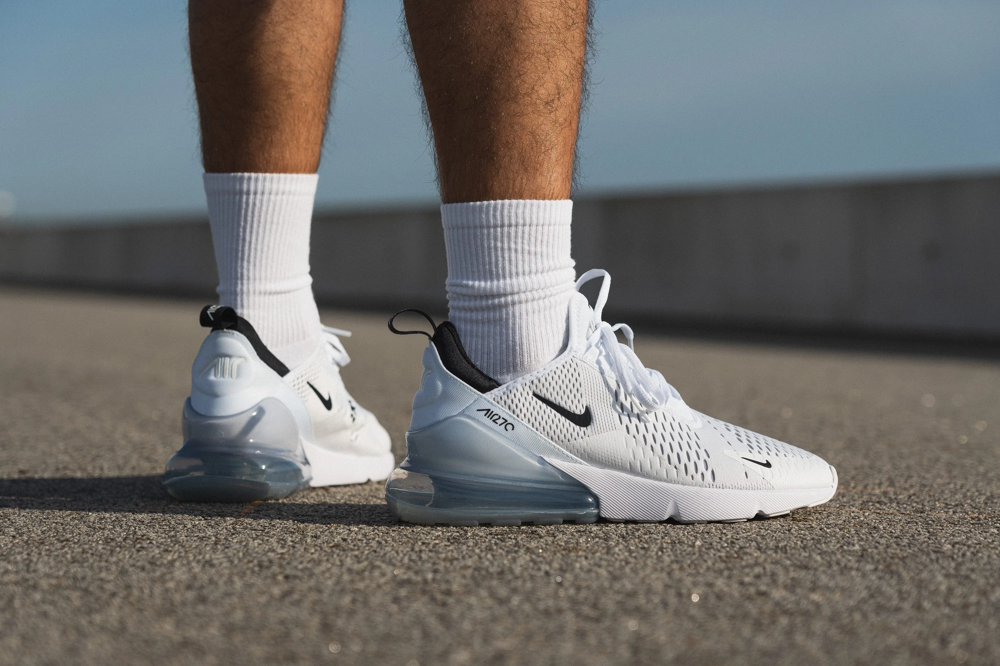
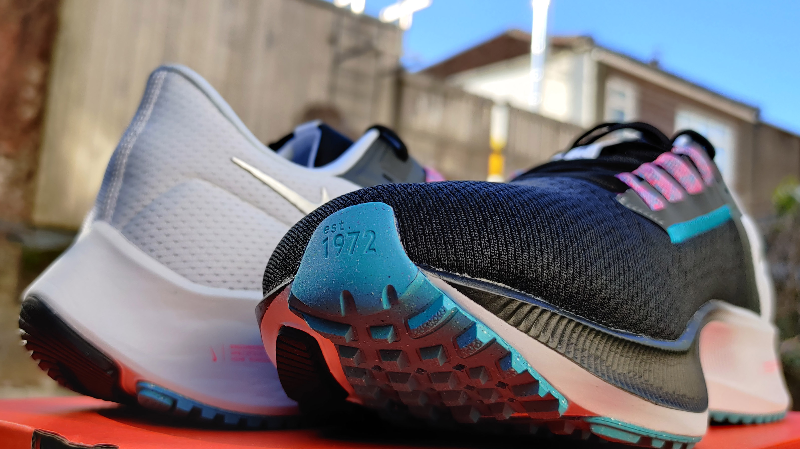
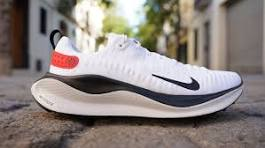

- Nuestro catalogo esta hecho directamente para gente que quiere vestir bien minetras se siente comodo
- Es un modelo popular por su suela, que es la suela Air Max más grande que Nike había creado hasta el 2018. Esta suela se extiende desde el talón hasta el antepié y proporciona una amortiguación increíble, dando extra comodidad.
- Son un excelente modelo de tenis de correr. Son populares por ser una versión más accesible que otros modelos de running y por dar un excelente soporte de pisada en carreras largas. La característica principal de este par es su antepié con una unidad de Zoom Air. Esta unidad da una amortiguación de respuesta rápida para un efecto de rebote en cada zancada.
- Son un modelo altamente popular de la línea de running. Tienen tecnología de amortiguación React de Nike en la entresuela, que es una espuma conocida por ser suave y receptiva, que hace que absorba el impacto y proporcione un retorno de energía. Esto los hace perfectos para los corredores que buscan carreras cómodas y suaves en sus pies.
- Su parte superior está hecha de tecnología Flyknit de Nike, que es un tejido ligero, flexible y transpirable. Esto hace que el ajuste del calcetín se adapte al pie y reduzca la probabilidad de rozaduras. Este modelo es de una sola pieza con un mínimo de costuras, tiene un talón reforzado para mejor estabilidad y su suela tiene un diseño tipo “rocker“ que ayuda a que el pie se mueva de manera natural.
Nusestros Estilos
Nike Air Max 270

Nike Zoom Pegasus 38

Nike React Infinity Run Flyknit

Otros estilos que te pueden Gustar
- Nike Air Force 1
- Nike Kyrie 7